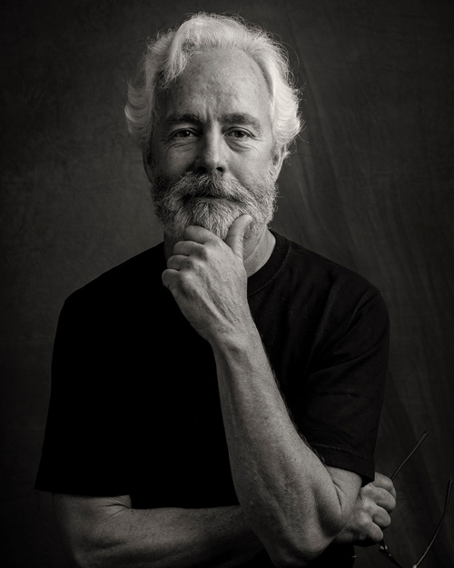

Photography was an adolescent passion that led me to studies at the Academy of Art in San Francisco, eight years as a photographer in the U.S. Navy and three years as a photographer/graphic artist at Stanford University. Ultimately taking photographs for a living tamped down my passion and I literally stopped taking photographs for over twenty years. Then I picked up an iPhone and rediscovered photography. It was all new, all digital and the passion was rekindled. These images are the result of that reengagement with the art and craft of photography.